CIS6003 Advanced Programming — WRIT1
Student ID: st20360306
ICBT Campus / Cardiff Metropolitan University
Repository: https://github.com/OGGY404/sunrise-dental-clinic
READ THIS FIRST — then delete this box before you submit.
This is a draft. The descriptive and technical sections are written for you: what the system does, how it is built, what the figures show, what the numbers are. Those are documentation of work that exists, and every fact in them was measured from the repository rather than estimated.
Four sections are deliberately left for you to write, each marked ✍️ YOUR WORDS: §2.5 (evaluation of the design), §4.1 (testing rationale), §4.6 (evaluation and lessons learned) and §6 (conclusion). They are the analysis, justification, evaluation and reflection — and they are where the marks actually are. Your own CLAUDE.md §10 says exactly this, and Cardiff Met's unfair practice rules cover generated text. Each has the raw material and the questions sitting right underneath it, so none should take more than fifteen minutes.
Word count, honestly. Written here: ≈ 3,410 words, measured. Add your four sections (~600) and roughly 150 words of figure captions and you land near 4,160 against a 4,000 limit — about 160 over. Word will give you the real number once the figures are in.
Two cuts close that gap and neither costs a mark:
1. Move the §4.3 test-data table into Appendix B, leaving the paragraph
above it and one sentence pointing at the appendix. (~90 words)
2. Use fewer figures. Only include a figure you actually discuss in the
text; three of the twenty are decorative. (~75 words)
If you are still over: move the §4.5 traceability summary table into Appendix C as well (~110 words).
Do not cut §3.3 (the design-pattern table with its "what it cost" column) or §4.2 (the red–green commit table). Those are the two highest-value pieces of evidence in the report.
Before submitting: delete this box, insert the figures named in each [Figure n] marker, apply the formatting checklist in report-skeleton.md, export to PDF, name it st20360306 CIS6003 WRIT1.
(Generate in Word from the Heading styles: References → Table of Contents.)
Sunrise Dental Clinic is a private dental centre in Colombo whose appointments and records were kept on paper. The scenario names three consequences — double bookings, lost records and billing errors — but they are one fault appearing three times: a paper diary cannot enforce a rule.
This report describes the computerised replacement: a three-tier Java application on Spring Boot 3 and MySQL 8, with a REST web service layer and seventeen Thymeleaf screens. It delivers the six functional requirements and thirteen of the additional features the brief invites, supported by 268 automated tests, eight UML diagrams and a pipeline that builds, tests and releases it. The four assessed parts follow in turn; all source, diagrams and documentation are in the repository above.
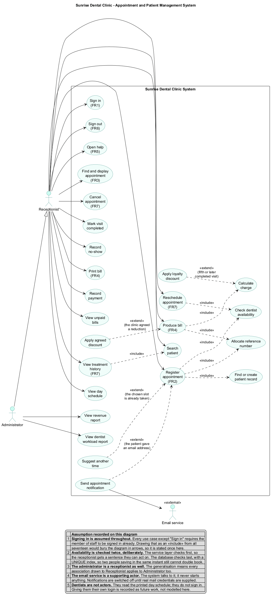
Figure 1: Use case diagram for the Sunrise Dental Clinic system.
Two human actors use the system. The Receptionist does the day-to-day work, and the Administrator is drawn as a generalisation of the Receptionist, because an administrator does everything a receptionist does and also sees the management reports; the generalisation means every association need only be drawn once.
The email service is a supporting actor — the system talks to it, it never starts anything. Dentists are deliberately not actors: they read the printed day schedule and do not sign in. Giving them a login is recorded as future work rather than modelled as something that exists.
The <<include>> and <<extend>> stereotypes are used in their proper senses, which are opposites and are commonly confused.
Four includes and four extends are modelled, each labelled with its condition.
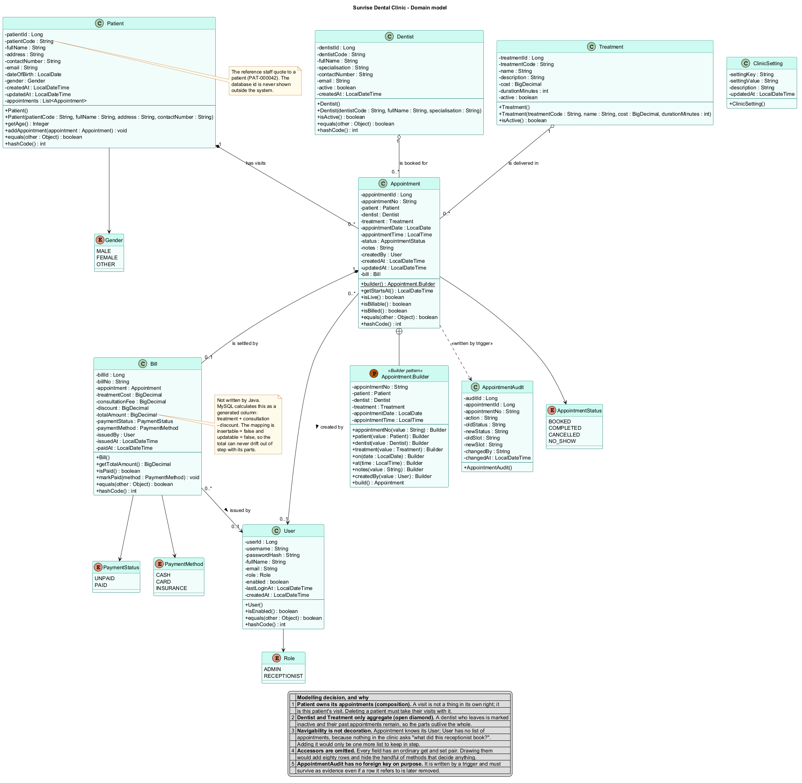
Figure 2: Domain model: attribute types, method signatures, visibility, multiplicity, navigability, aggregation and composition.
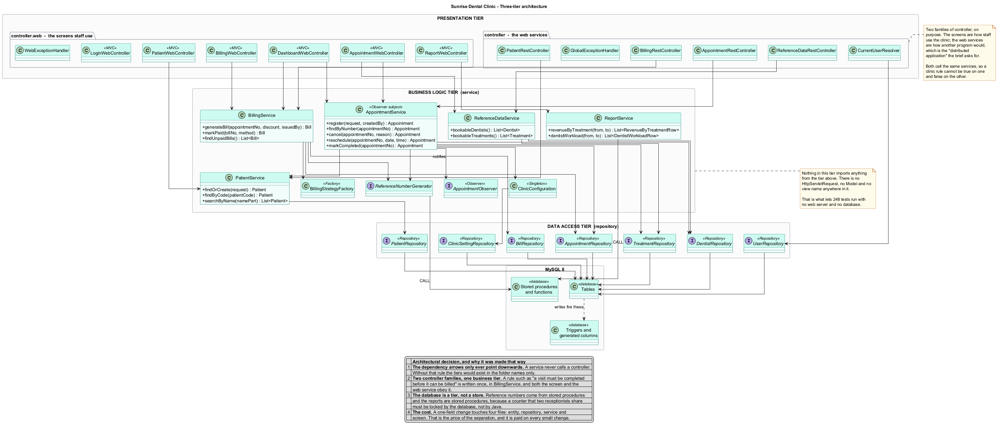
Figure 3: The three tiers, and the direction in which dependencies are allowed to point.
Every attribute carries its type and every method its full signature, taken from the source rather than remembered, so the diagram and the code agree. All fields are private with public accessors.
The whole–part relationships are the part of this diagram that required the most thought, and the two kinds are used differently on purpose:
Patient to Appointment, and Appointment to Bill. An appointment is not a thing in its own right; it is this patient's visit, and it has no meaning if the patient is removed. A bill exists only for the visit it settles.Dentist and Treatment to Appointment. The difference is that these parts outlive the whole: a dentist who leaves the clinic is marked inactive rather than deleted, and their past appointments stay in the record permanently.Multiplicity is shown on every association. Appointment 1 ↔ 0..1 Bill is worth noticing: the 0..1 is what allows a visit that has taken place but has not yet been billed, which is a normal state at a reception desk.
Navigability reflects the code rather than decorating the diagram. Appointment knows its User, but User holds no list of appointments, because nothing in the clinic asks "what did this receptionist book?". Figure 3 arranges the same classes by tier, and its single message is that every dependency arrow points downwards.
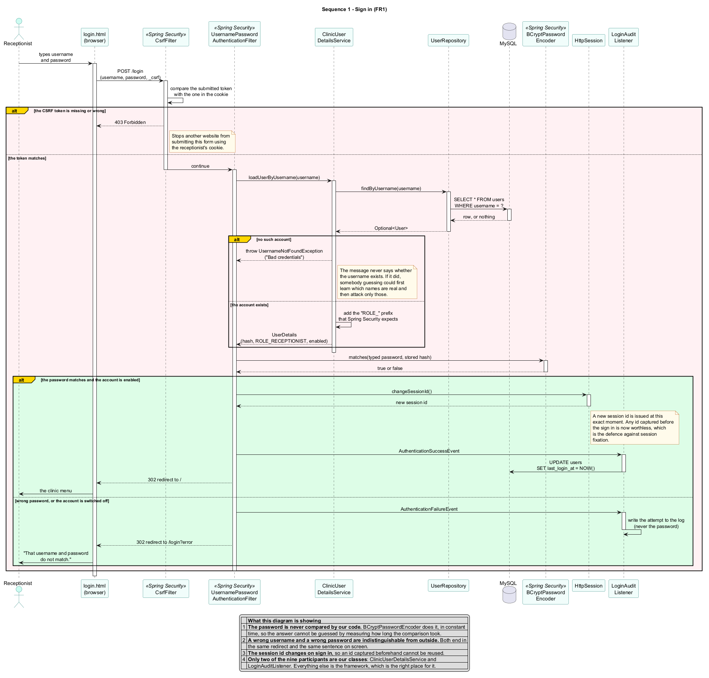
Figure 4: Sequence: signing in (FR1).
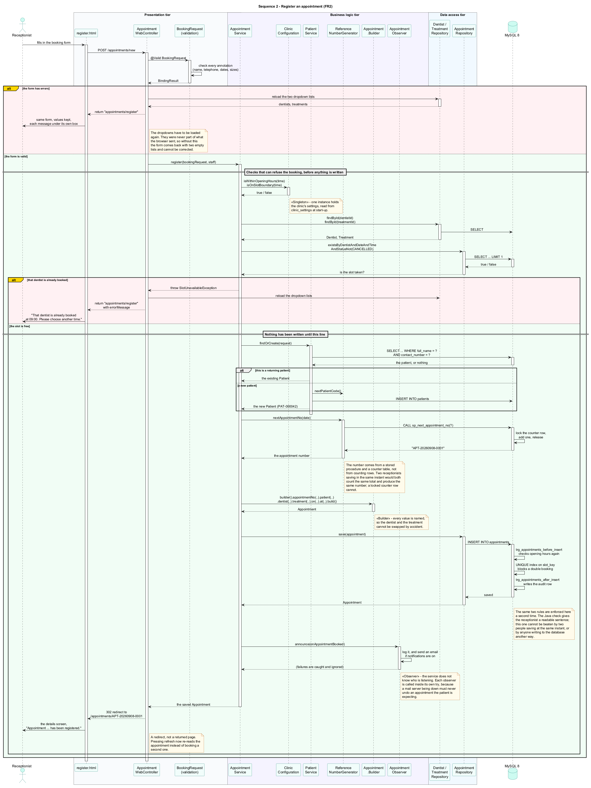
Figure 5: Sequence: registering an appointment (FR2), with both failure paths.
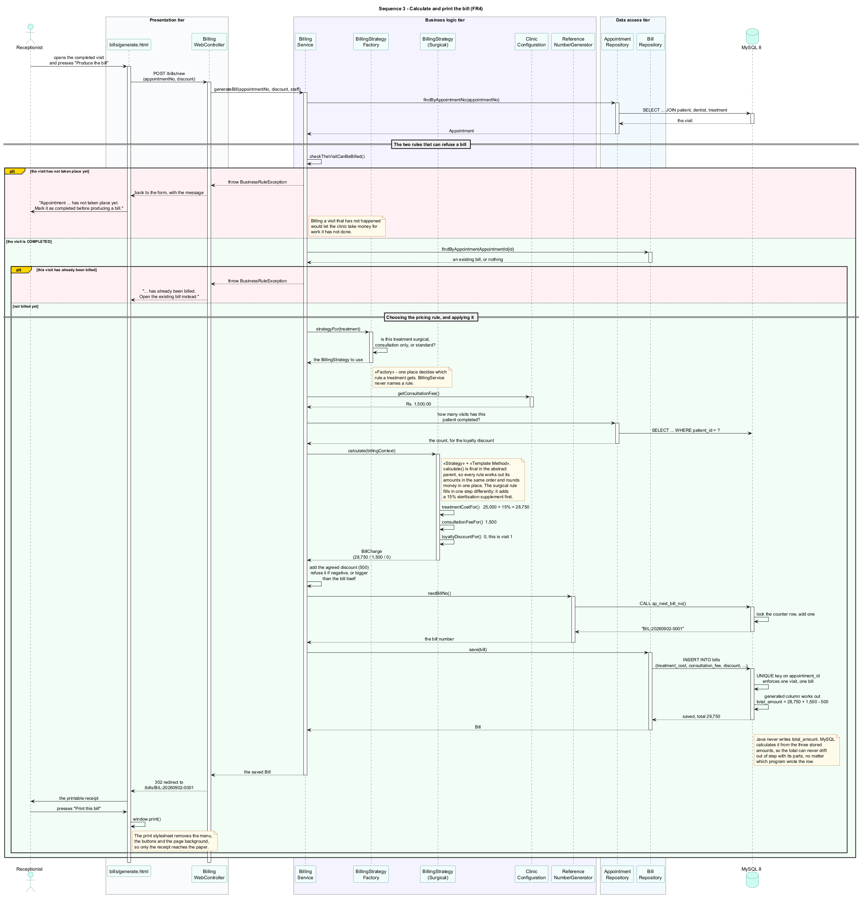
Figure 6: Sequence: calculating and printing the bill (FR4).
Four sequence diagrams were produced; three are shown here and the fourth (cancelling) is in Appendix E. All use proper lifelines, activation bars and alt fragments. Three points are worth more than narrating the arrows.
Participants in Figures 5 and 6 are grouped into tier bands, and messages only travel downwards and return, so the architecture claimed in Figure 3 is visible as a shape. The alt fragments show that the failure paths were designed rather than discovered: Figure 5 has three endings — invalid form, slot gone, booking succeeds — each drawn before any code was written. Finally, the note "Nothing has been written until this line" marks a deliberate ordering: every check that can refuse a booking runs before any row is created, so a rejected booking cannot leave a half-created patient behind.
Seventeen assumptions were recorded during modelling; the full list is in Appendix D. The five that most affect the design are that patients never use the system themselves; that one dentist sees one patient at a time, so dentist plus date plus time is unique; that a returning patient is recognised by name and telephone number, because a name alone is shared by two people and a number alone is shared by a family; that one visit yields one bill, with prices copied onto it at the time of issue so an old receipt survives a price rise; and that cancelling frees the slot while a no-show does not, the dentist's time having already been spent.
Two further assumptions are honest limitations rather than decisions. A long treatment does not yet block the following slot, although each treatment records its duration; and several rules are enforced twice, once in Java and again in SQL, which is discussed in §2.5.
Write this yourself. Three questions, with the evidence to answer them:
(a) Do the three diagram types support each other? Follow Register appointment through Figure 1 → Figures 2 and 3 → Figure 5. Say where they agree and whether anything disagrees.
(b) Defend the hardest decision. Several rules are enforced twice — in AppointmentService and again by a database trigger or unique index. The benefit: the Java check produces a sentence a receptionist can act on, while the database check cannot be beaten by two people saving in the same instant or by anyone reaching the database another way. The cost: the rule is written in two places and could drift apart. State whether you would do it again.
(c) Name a weakness. Assumption: a long treatment does not block the following slot. This was found while modelling, not afterwards. Say what it would take to fix and why it was left.
The code is divided into controller, service and repository packages, with model, dto and config alongside, and one rule holds throughout: dependencies point downwards only. There is no HttpServletRequest, no Model and no view name anywhere in the business tier.
The evidence is not the folder names but the test suite: 262 of the 268 tests run with no web server and no database at all, which is only possible because the tiers are genuinely separate. Of the 92 classes in src/main, the business tier holds six services, three billing strategies, a factory, four notification classes and a configuration holder — responsibility spread out rather than one large class.
Seventeen REST endpoints form the web service layer, which is what makes this a distributed application rather than a monolithic desktop program: the clinic's screens and any other client talk to the server over HTTP.
They cover registering, displaying, cancelling, rescheduling and completing a visit; patient lookup and treatment history; producing, reading and settling a bill; and the two reference lists the booking form needs. The full table is in Appendix I.
There are deliberately two families of controller over one business tier: controller serves JSON to programs, and controller.web serves HTML to staff. Both call the same services, so a rule such as "a visit must be completed before it can be billed" is written once and cannot be true on one interface and false on the other.
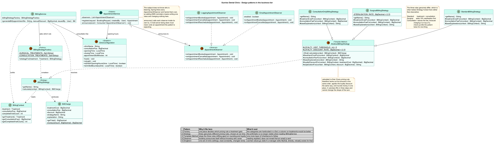
Figure 7: Factory, Strategy, Template Method, Observer and Singleton in the business tier.
Eight patterns are implemented. Each is named in a comment in the code, and each is recorded below with what it improved and what it cost, because a pattern with no cost has usually not been thought about.
| Pattern | Where | What it improved | What it cost |
|---|---|---|---|
| Singleton | ClinicConfiguration | one instance of the clinic's settings, read constantly and changed rarely | cached values go stale if a manager edits MySQL directly; reload() exists for that |
| Strategy | three billing rules | pricing chosen at run time without BillingService naming any rule | the arithmetic is no longer visible when reading BillingService |
| Template Method | AbstractBillingStrategy | calculate() is final, so all three rules work in the same order and round money in one place | one more layer of inheritance to follow |
| Factory | BillingStrategyFactory | one place decides which rule a treatment gets | treatment categories are hardcoded in a Set; a database column would be better |
| Builder | Appointment.Builder | every value is named, so dentist and treatment cannot be swapped by accident | about 40 extra lines, and a second place to update |
| Observer | AppointmentObserver, ReminderNotifier | booking announces itself without knowing who listens; adding SMS means one new class | reading register() does not reveal that an email is sent |
| Repository | seven Spring Data interfaces | data access declared rather than written | the generated SQL is not visible in the code |
| MVC | controller.web + Thymeleaf | screens separated from rules | two controller families to keep in step |
The Strategy pattern is worth one further sentence, because it is the one most often added decoratively. The three rules here genuinely differ:
A single method with an if could have done this, but each branch would then have had to remember the loyalty discount and the rounding for itself.
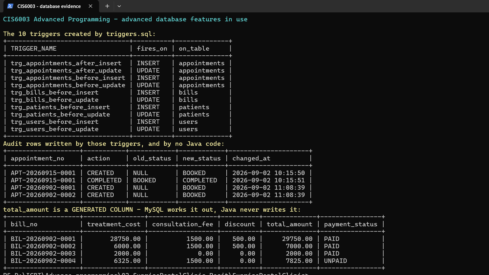
Figure 8: The ten triggers, the audit rows they wrote unaided, and the generated total column.
The schema is 1,750 lines of SQL across four scripts and contains 10 tables, 6 stored functions, 13 stored procedures and 10 triggers. All of it is created automatically on first start, so nothing has to be set up by hand.
Four features do work that the Java deliberately does not.
Reference numbers come from stored procedures. Counting existing rows and adding one is wrong the moment two receptionists save at the same instant: both count the same total and both produce APT-20260908-0007. sp_next_appointment_no locks a single counter row for the fraction of a second it needs, so they get 0007 and 0008. No Java outside the database can give that guarantee.
Double booking is prevented by a generated column. appointments.slot_key holds dentistId|date|time for a live appointment and NULL for a cancelled one, under a UNIQUE index. Because SQL permits many NULLs in a unique index, cancelling frees the slot without deleting anything, and the visit stays in the patient's history.
The bill total is calculated by MySQL. bills.total_amount is a generated column computing treatment_cost + consultation_fee - discount, mapped insertable = false, updatable = false so Java cannot write it. It therefore cannot drift out of step with its parts, whichever program wrote the row.
Triggers keep a record nobody can quietly edit. Ten triggers validate and audit; two of them write to appointment_audit, which no Java code ever writes to, so the clinic can answer "who gave that slot away, and when?" — the question paper could never answer.
Five stored procedures are called by the running system rather than merely shipped with it: two for reference numbers and three for the reports and reminders, so grouping and totalling happen where the data already is.
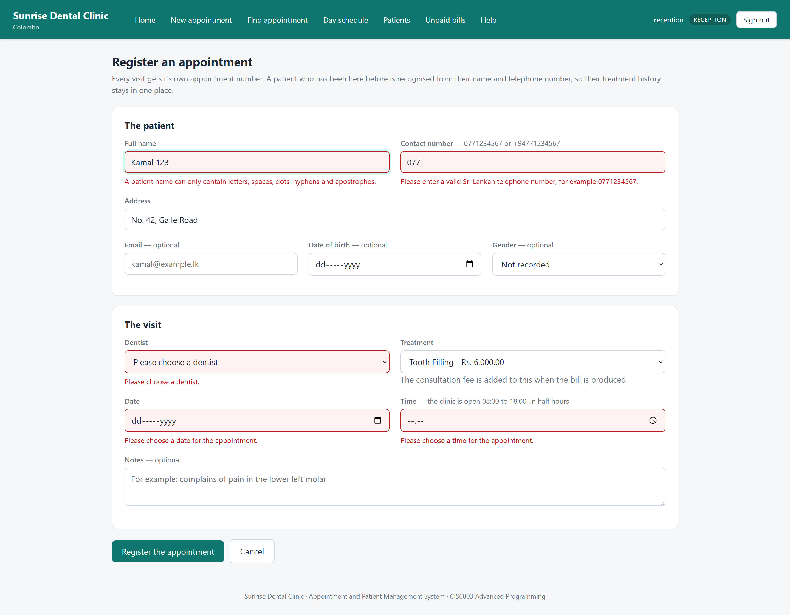
Figure 9: A rejected booking form: five fields marked, each with its own message, and every value kept.
Bean Validation annotations guard every incoming field, and every limit matches the column width in schema.sql, so anything that validates can always be stored. A telephone number is accepted as 0771234567 or +94771234567 and in no other shape; a name may hold letters, spaces, dots, hyphens and apostrophes but never digits — the pattern allows W.A.G.K. Rathnayake-Silva, which an earlier letters-only version wrongly rejected.
Figure 9 shows a refusal: the same form returns with every value kept, a message under each offending box, and both dropdowns reloaded. A redirect or a blank form would make the receptionist type everything again.
Sessions and cookies. Login state is kept in a session cookie named SUNRISEID, marked HttpOnly so page scripts cannot read it and SameSite=Lax so another site cannot make the browser send it, timing out after thirty minutes of inactivity — which matters at a reception desk where the screen is left unattended. A new session id is issued at login, so an id captured beforehand is worthless afterwards.
Cross-site request forgery protection is left on. Keeping login state in a cookie is precisely what makes that attack possible, since the browser attaches the cookie to any request to this site. Reads need no token; every write does.
Passwords are BCrypt hashes at strength 10, compared by BCryptPasswordEncoder in constant time rather than by any code written here. A wrong username and a wrong password are refused identically, so nobody can learn which usernames exist. Role-based access separates ADMIN from RECEPTIONIST: the management reports show clinic-wide takings, and a receptionist asking for them receives 403.
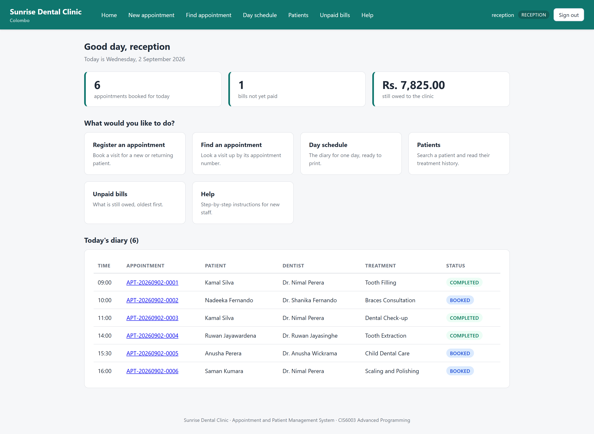
Figure 10: The main menu, with today's diary and the money outstanding.
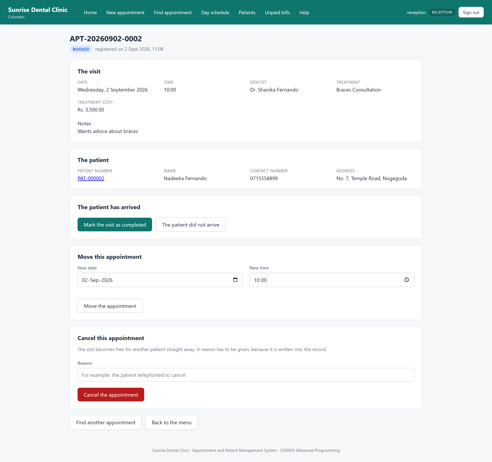
Figure 11: Appointment details for a booked visit, with the actions available in that state.
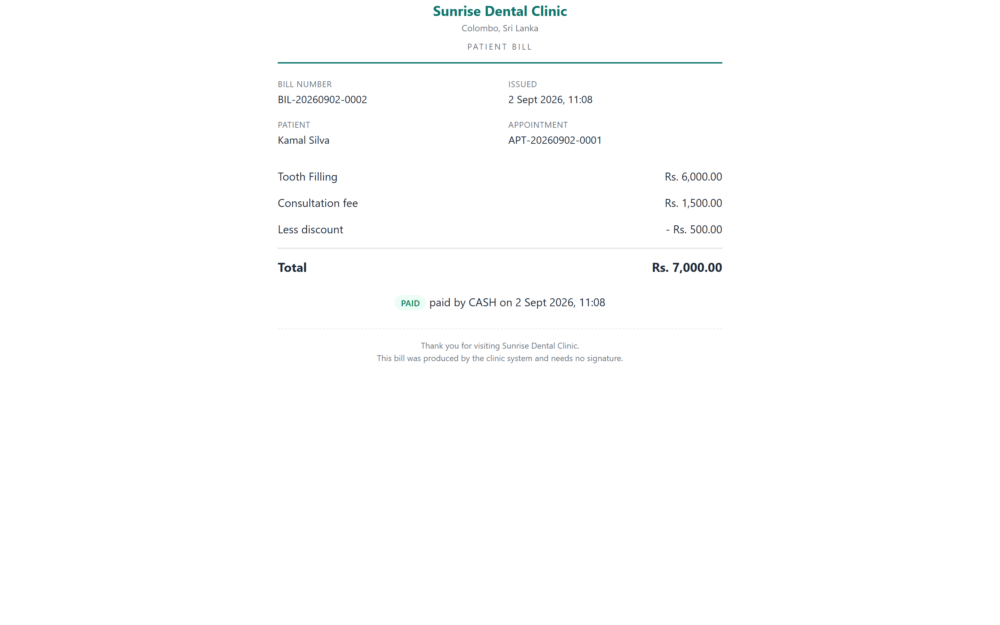
Figure 12: The bill as printed: the print stylesheet removes the menu, buttons and background.
Seventeen Thymeleaf screens share one stylesheet and one navigation bar, so every job is one click away — the menu-driven system the brief asks for. The home screen (Figure 10) also shows the two numbers the front desk needs first thing: patients coming today, and money owed.
Data entry and viewing results are separate screens, as the assessment requires. Registering uses appointments/register and the result is shown by appointments/view; producing a bill uses bills/generate and the receipt is bills/view. This is not a formality: every save redirects to the result page rather than returning it, so pressing refresh re-reads the record instead of booking a second appointment or issuing a second bill.
Figure 12 is a print-media render, not the screen with the menu cropped away. The print stylesheet removes the navigation, the buttons and the page background, leaving only the receipt: 6,000 + 1,500 − 500 = Rs. 7,000.00.
The system also provides a step-by-step help section (FR5) written for somebody on their first morning at the desk, and a sign-out control (FR6) implemented as a POST carrying the CSRF token, so another site cannot sign a receptionist out without their knowledge.
Beyond FR1–FR6, thirteen additional features were built: cancellation, rescheduling, mark-completed and no-show, treatment history, patient search, double-booking prevention, role-based access, the daily schedule, revenue and workload reports, an unpaid bills list, booking notifications and reminders.
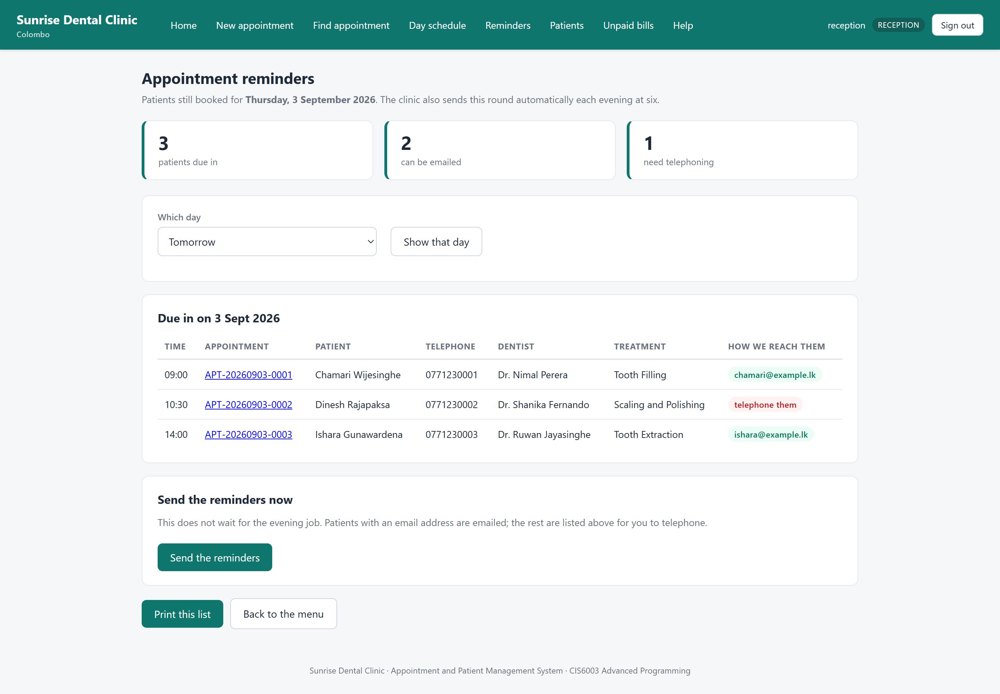
Figure 13: Appointment reminders, split into who can be emailed and who must be telephoned.
The reminder feature (Figure 13) reports two counts rather than one: patients emailed, and patients with no email address. "Five reminders sent" would be a comfortable statement if two of them could not be reached at all. The split shows the receptionist who still has to be telephoned, which is the only part of the job a computer cannot finish. A scheduled job sends the round each evening.
Write this yourself, using this table, which is factual:
| Level | What it tests | Count | Runs against | Speed |
|---|---|---|---|---|
| Unit | one class, collaborators mocked | 123 | nothing | milliseconds |
| Repository | JPA mappings and derived queries | 38 | in-memory H2 | ~1 s |
| Web slice | one controller, services mocked | 82 | nothing | ~1 s |
| Integration | the whole application context | 19 | H2, and a real port | ~10 s |
| Database | schema, procedures, triggers | 6 | real MySQL 8 | ~10 s |
Argue why this shape is a balance rather than a shortcut: most tests at the levels that run in milliseconds, so a broken rule is reported in under a minute; the slow levels reserved for what the fast ones genuinely cannot see. Say why only six database tests is enough, and why 123 unit tests is not too many.
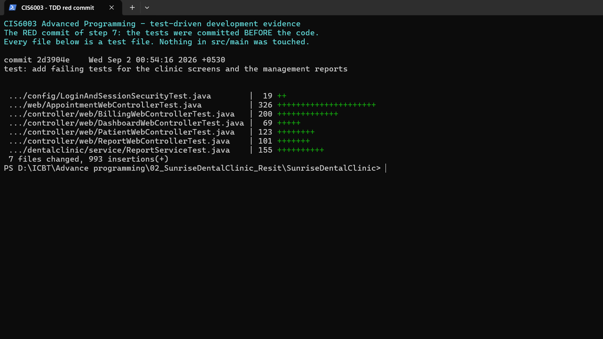
Figure 14: A red commit: seven files changed, every one a test file, nothing in src/main.
TDD is not claimed here; it is visible in the Git history. On seven separate occasions across four days, the failing tests were committed before the code that makes them pass. Each red commit deliberately does not compile, because the classes its tests name do not exist yet.
| Step | Red commit | Green commit | Tests after |
|---|---|---|---|
| Domain model | 5c5c357 | a05f7c4 | 39 |
| Design patterns | 2e89427 | dab3032 | 77 |
| Service layer | 4fa3ebc | 49c5559 | 121 |
| Web services | ca70acc | 1e07179 | 183 |
| Security | a41b34b | 2e068c6 | 205 |
| The screens | 2d3904e | ee29194 | 248 |
| Reminders | 22e09fc | 7c8b027 | 262 |
Any of them can be verified:
git show 2d3904e --stat # only test files git checkout 2d3904e mvnw test-compile # fails: cannot find symbol AppointmentWebController
Refactoring — the step most often left out — is also recorded. The three pricing rules were first written as three independent classes and all their tests passed. Reading them afterwards showed the same three steps repeated in each, so calculate() was pulled up into an abstract parent and made final. No test changed. That is what made the refactor safe, and it is precisely what the tests were for.
Two decisions the red step changed are worth naming. Writing todayIsAllowed before the annotation forced the question "is today past or future?" to be answered deliberately — @Future would have been the obvious choice and would have been wrong, because a patient with toothache can walk in and be seen that afternoon. Writing aFailingObserverDoesNotLoseTheBooking first is why each observer is called inside its own try.
The full test plan is in Appendix B: 111 cases, each with an ID, precondition, steps, test data, expected and actual result, pass/fail, and the name of the automated test that runs it. Every case is automated; none was run by hand and then written down.
Test data was derived from the specification — the column widths in schema.sql, the opening hours, the rules in the brief — and devised where a specific risk needed probing. Equivalence partitioning and boundary value analysis were applied throughout. A representative sample:
| Case | Data | Expected | Why |
|---|---|---|---|
| TC-FR2-05 | name of 101 characters | reject | boundary: the column holds 100 |
| TC-FR2-04 | W.A.G.K. Rathnayake-Silva | accept | devised: real Sri Lankan names carry dots and hyphens |
| TC-FR2-08 | 077123456 (9 digits) | reject | boundary: one digit short |
| TC-FR2-10 / 11 | yesterday / today | reject / accept | boundary either side of "the past" |
| TC-FR4-04 / 05 | 4th / 5th completed visit | no discount / 10 % | boundary of the loyalty rule |
| TC-DB-05 | duplicate slot inserted bypassing Java | refused by the unique index | devised: proves the rule is in the database |
The last row is the most valuable kind. It writes straight to the table with JdbcTemplate, skipping every Java check, and is the only way to prove that a rule really lives in the database rather than only in the application.
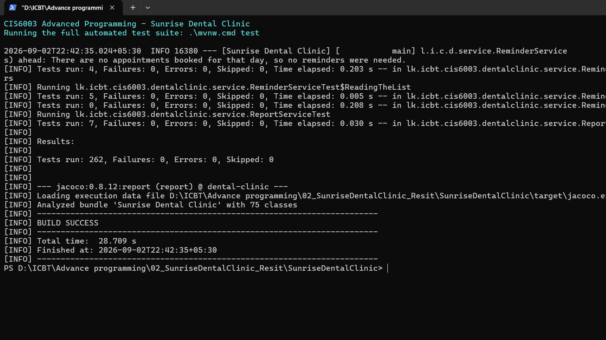
Figure 15: The full suite: 262 tests, 0 failures, 0 errors.
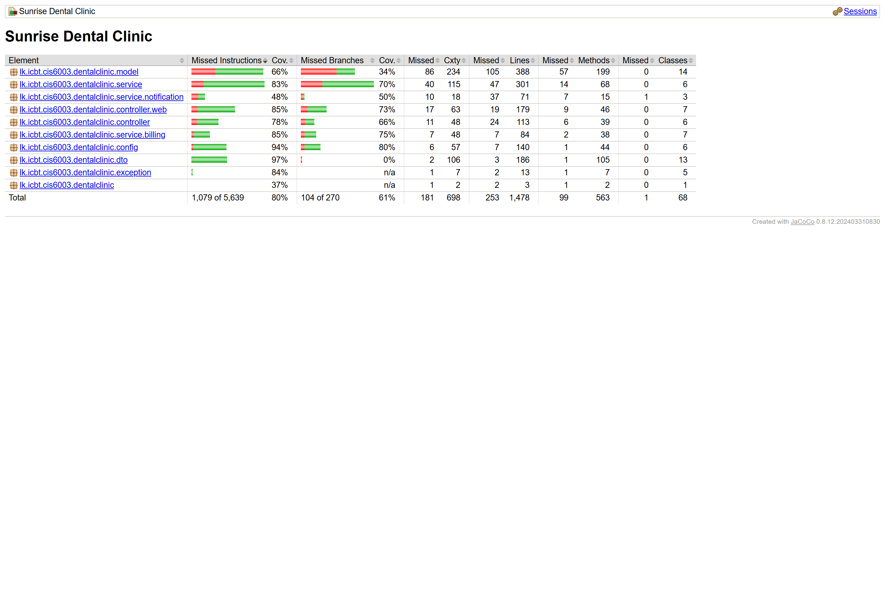
Figure 16: JaCoCo coverage report.
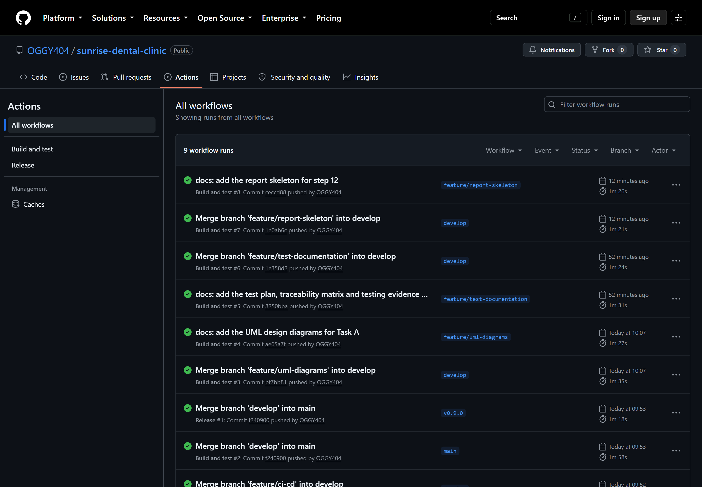
Figure 17: GitHub Actions: the three continuous integration jobs.
268 automated tests across 32 test classes, with no failures. JaCoCo reports 78.8 % instruction and 62.2 % branch coverage. Everything runs from one command and needs no human: ci.yml runs the whole suite on every push, repeats the database half against a real MySQL 8 container, then packages the jar — and only if both test jobs passed.
Two figures are deliberately low and better explained than hidden. model sits at 66.7 % because most of it is accessors no test calls directly, while the methods that decide anything are covered. service.notification sits at 32.6 % because email is switched off until real credentials exist; raising it would mean mocking a mail server to prove Spring can send an email, which tests the framework rather than the clinic.
Appendix C traces every requirement from the design that models it, through the code that implements it, to the tests that verify it. A requirement with an empty test column would be one nobody has checked; there are none. The six core requirements are summarised here:
| Req | Designed in | Implemented in | Verified by |
|---|---|---|---|
| FR1 login | UC diagram, sequence 1 | SecurityConfig, ClinicUserDetailsService | LoginAndSessionSecurityTest (9 cases) |
| FR2 register | UC + class + sequence 2 | AppointmentService, BookingRequest | 30 cases |
| FR3 display | UC, sequence 2 | AppointmentService.findByNumber | 6 cases |
| FR4 bill | UC + class + sequence 3 | BillingService, 3 strategies | 20 cases |
| FR5 help | UC diagram | help.html | 1 case |
| FR6 exit | UC diagram | SecurityConfig logout | 2 cases |
Three items are not automated, and the matrix says so: printing on paper, sending a real email, and the visual appearance of the screens. A matrix claiming complete coverage would not be true.
Write this yourself. The honest material, which is stronger than a claim that everything worked:
Three bugs reached the running application while the whole suite was passing.
| Bug | Why every test passed |
|---|---|
| password_hash was CHAR(60) in SQL but VARCHAR on the entity, so the application would not start against MySQL | H2 builds its tables from the entities, so the two could never disagree |
| The CSRF cookie was deleted at login and never reissued, so every save after signing in returned 403 | MockMvc supplies its own token instead of reading the cookie |
| The tables and the database used different collations, so a stored function could not compare its parameter against a column and every booking failed | H2 has no stored functions at all |
The pattern is the same in all three. Say it in your own words — something like: a test suite that supplies both sides of the exchange will confirm its own assumptions.
Then say: what you changed (added a real-MySQL level and a real-HTTP level, both of which now fail if the fix is removed); what you would do differently (start the real database earlier); and what that would have cost.
Finish with a position on whether TDD was worth it here — you have evidence on both sides.
The public repository is https://github.com/OGGY404/sunrise-dental-clinic.
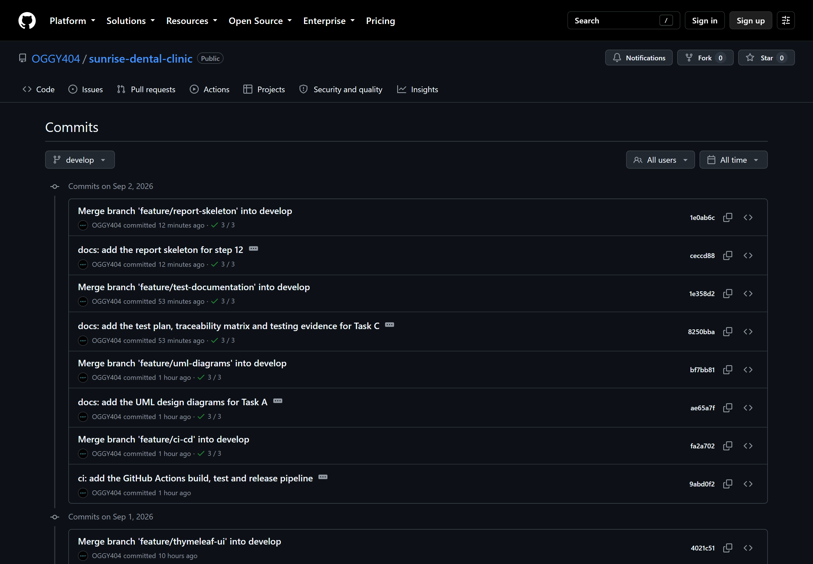
Figure 18: Commit history on the develop branch.
A three-level branching strategy was used throughout:
main holds released versions only, and carries the tags.develop is the integration branch.feature/*** — eleven branches, one per step of the build, from database-layer through to appointment-reminders.Every feature branch was merged with --no-ff, so the history shows the shape of the work rather than flattening it into one line.
42 commits across four separate days, each adding a feature incrementally:
| Date | Commits | Work |
|---|---|---|
| 21 Aug 2026 | 6 | repository, skeleton, database schema, procedures, triggers |
| 28 Aug 2026 | 9 | entities and repositories, design patterns, service layer |
| 1 Sep 2026 | 7 | REST web services, validation, login and roles |
| 2 Sep 2026 | 20 | screens, reports, CI/CD, UML, test documentation, reminders |
Messages follow the conventional style — feat:, fix:, test:, ci:, docs: — and each explains why rather than restating the diff. The test: commits deliberately precede their feat: counterparts, which is the TDD evidence in §4.2.
A .gitignore keeps target/, IDE folders and .env out of the repository, so no credential has ever been committed. .env.example is committed instead, as a template.
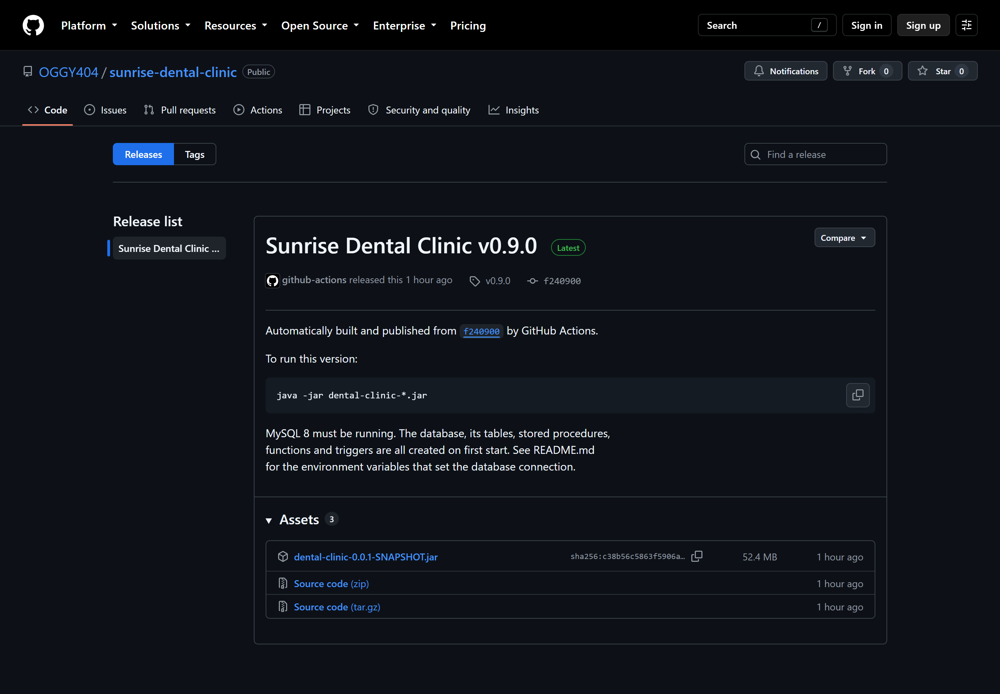
Figure 19: Release v0.9.0 with the runnable jar attached.
ci.yml runs three jobs in order on every push and pull request:
The second job exists because of the bugs in §4.6: H2 can only ever agree with the entities it was built from, and it has none of the stored procedures, triggers or generated columns. MySqlDatabaseIT now checks all of that on a clean MySQL 8 on every push.
release.yml handles deployment. Pushing a version tag builds from a clean checkout, runs the tests again — a tag can be pushed from any machine, and a released version must never be one nobody proved — then publishes the runnable jar as a GitHub Release. v0.9.0 is published with the jar attached (Figure 19). Because Spring Boot packages the web server inside the jar, deployment is Java 17, MySQL 8 and one command:
export DB_HOST=localhost DB_NAME=sunrise_dental DB_USERNAME=clinic DB_PASSWORD=... export COOKIE_SECURE=true # once served over HTTPS java -jar dental-clinic-0.0.1-SNAPSHOT.jar
The database, tables, procedures, functions and triggers are all created on first start, so a new server needs nothing set up by hand.
Write this yourself. Four sentences:
1. What was delivered against FR1–FR7 (all six core requirements and thirteen
additional features; 268 tests; a published release).
2. The one thing you are most pleased with — pick something specific, such as
the database holding the double-booking rule so that two receptionists saving at the same instant cannot break it.
3. The one thing you would change — the long-treatment slot limitation, or
starting the real-database tests earlier.
4. What you take into the next project.
(Excluded from the word count. Cite only what you actually read — a list containing books you have not opened is itself an offence, and markers ask.)
Candidates, if you read them:
(Excluded from the word count — use them generously.)
| Appendix | Contents | Source |
|---|---|---|
| A | Source code listings of the key classes | src/main/java/... |
| B | Full test plan, 111 cases | docs/testing/test-plan.md |
| C | Full traceability matrix | docs/testing/traceability-matrix.md |
| D | All 17 documented assumptions | docs/uml/README.md |
| E | Sequence diagram 4 — cancel an appointment | docs/uml/png/08-sequence-cancel-appointment.png |
| F | Remaining screenshots | docs/report/screenshots/ |
| G | End-to-end walkthrough output | docs/testing/manual-walkthrough-output.txt |
| H | Database scripts | src/main/resources/db/*.sql |
| I | Full list of the 17 web service endpoints | README.md |